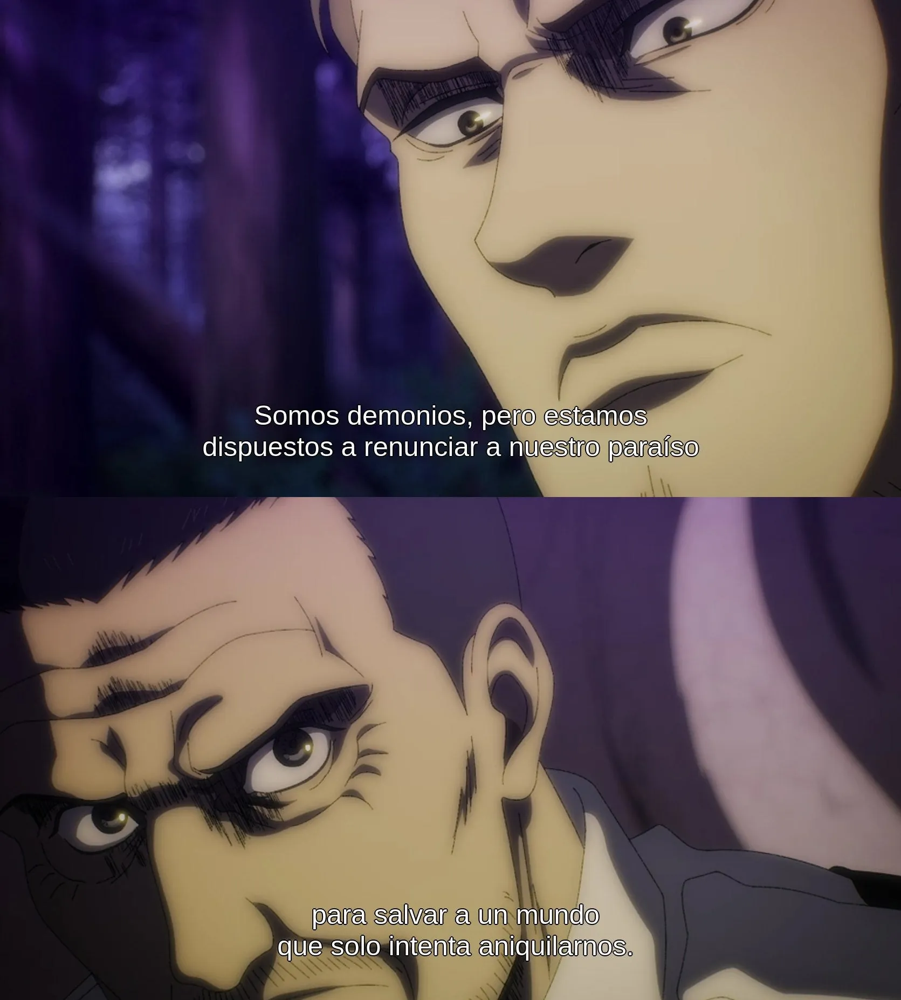
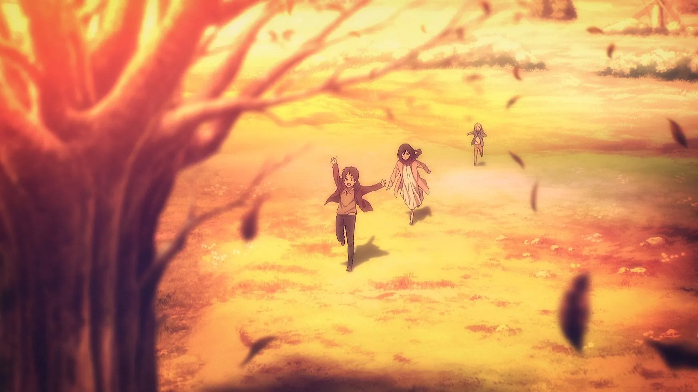

La Alianza en Attack On Titan ha sido criticada normalmente bien sea desde el enfoque de la cultura y política de nuestro mundo trasplantada a la situación del de Eldia y Marley, o desde una adaptación de los hechos que apele a las necesidades personales de representación del tópico de turno. La critica y el análisis común con el que se les fulmina al grupo protagonista del arco final me resulta simplista y que no hace el esfuerzo de entender a los personajes principales de la historia como personas completas y con sus duelos, sino que se convierten en la representación de algo o peor aún, se diluyen en una masa La Alianza) que a su vez transmuta a ejemplo/muñeco de paja de algún tema popular de la actualidad, al puro estilo del cine americano asalvajando relatos europeos para adaptarlos a la idiosincrasia del periodo electoral de turno, véase la griega Odisea o la danesa Sirenita.
Con los muros en ruinas y los millones de Titanes Colosales marchando por la Tierra, ningún miembro de La Alianza se opone realmente a las ideas de los Jaegeristas ni están personalmente en desacuerdo con los ideales del propio Floch.
Previa a su irreversible actuación, manejan las siguientes opciones sobre en cuanto a como actuar a continuación:
La primera es permitir que finalice el Retumbar, lo que llevaría a la extinción de toda la humanidad fuera de la isla. Significaría no solo la consecuente prevención del ya planeado, anunciado e inevitable ataque mundial contra Paradis, revelado por Willy Tybur en su discurso y posterior declaración de guerra (previa a cualquier agresión eldiana) en Liberio y vitoreado por todos los lideres mundiales, sino también la seguridad de la continuidad de la raza eldiana y una teórica paz duradera en la isla. En pocas palabras, no habrá genocidio eldiano y las generaciones venideras de nuestros protagonistas, como mínimo, existirán.
La segunda opción es detenerlo y con ello, interiorizan desde su planteamiento, matar a su amigo Eren. Es aquí donde enseñan sus colores.
Deteniéndolo asumen, con cierto grado de positividad, que el mundo exterior será incapaz de responder militarmente contra Paradis durante décadas, pero claramente temen que indudablemente algún día el mundo entero se vengará. Conscientemente, deciden ignorar este hecho, ya que les impide visceralmente poner punto y final a su causa.
La Alianza objetivamente no gana nada salvando el mundo. La ayuda marleyana tiene sentido ya que estos salvan a lo que queda de su gente y a la humanidad. La Alianza está sacrificando la única manera de salvar a su Nación porque son físicamente incapaces de aceptar el precio y el peso moral de las millones y millones de muertes que les separan de la paz, su Paz.

La cantidad exorbitante que debe morir aplastada y calcinada para que el pueblo Eldiano persista en paz es demasiado para las almas de La Alianza. Deciden acabar con Eren porque se ven superados por el peso moral que supone la única solución, a tal punto que ser un traidor se vuelve el único escape para el grupo.
Se pierden en las mediciones del mal menor en fin de un bien mayor, divagando buscando consuelo en la balanza del mal necesario.
¿Es la salvación de mi raza un bien mayor?"
“Puedo asumir el genocidio de la humanidad a costa de la supervivencia de mis seres queridos, mi pueblo y mi cultura?
¿Debo morir yo?ˮ
Una y otra vez las soluciones diplomáticas y los intentos de paz, la voluntad genuina del cese de las hostilidades son repetidamente frustradas y negadas. El mundo insiste inexorablemente en la destrucción de Paradis y la aniquilación total de su pueblo. Finalmente, bien sean antes los eldianos, el grupo que conformaría La Alianza o el propio Eren, se dan cuenta de que no hay solución política.
El lector podrá tener su propia opinión ante como reaccionar. Pesen o no estas, sean de mayor o menor complejidad para uno, son preguntas por las que hay que pasar y los personajes actuaron a pesar de ellas.
El mensaje final de Ataque a los Titanes, para mi, es la respuesta que dio el Papa Francisco a la pregunta ¨¿Por qué sufre el inocente?¨ citando el “¿Por qué sufren los niños?ˮ de Dostoevsky:
“Dios nos creó personas, y por lo tanto libres. Dios es respetuoso de la libertad. Y permitió que mataran a su hijo en la cruz. El juego de la libertad humana, Dios apostó a eso. Es mas deshonra para el hombre el hecho de que Dios pudiera quitarle la libertad que el hombre con su libertad cometa un crimen. Y aquí está el juego del amor, sin libertad, no podemos amar.”
